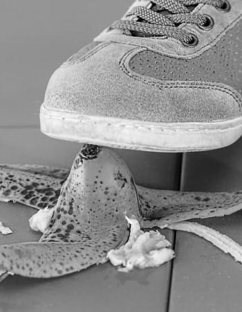

Safety, Privacy, and UAS

While useful for education, commercial, and educational purposes, it is crucial that Unmanned Aerial Systems are used in a way that is safe, respects the privacy of others, and obeys the law. UAS must be flown under 400 feet, and give a berth of at least 5 miles from an airport. UAS may also not be flown over important facilities such as power stations, water treatment facilities, or any government facilities. Privacy laws involving UAS vary from state to state. Some states sanction shooting down a trespassing UAS, while others have arrested citizens for the offense. As long as UAS rules and regulations are followed, users of UAS can have a safe experience, prosperous experience. To learn more about all of the safety guidelines, visit http://knowbeforeyoufly.org/for-recreational-users/.